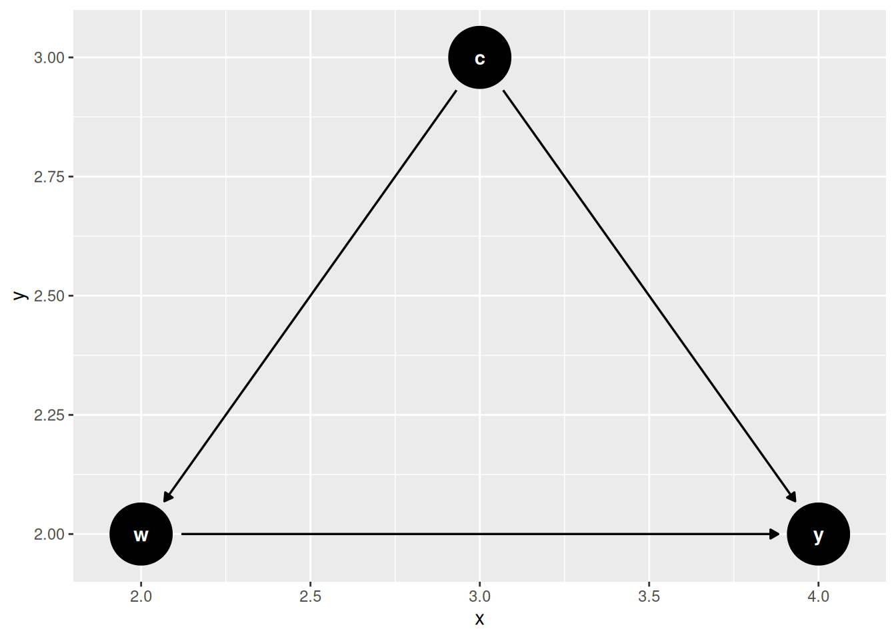
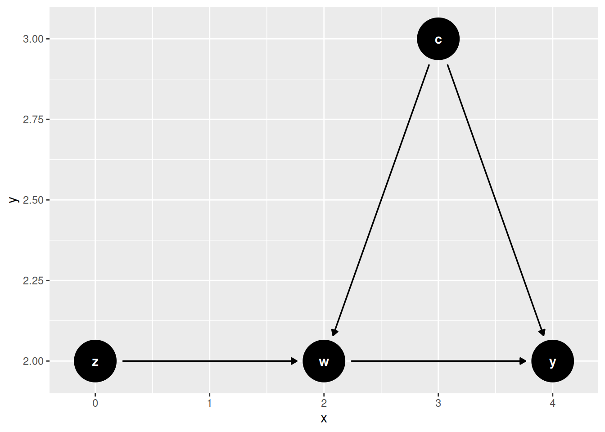
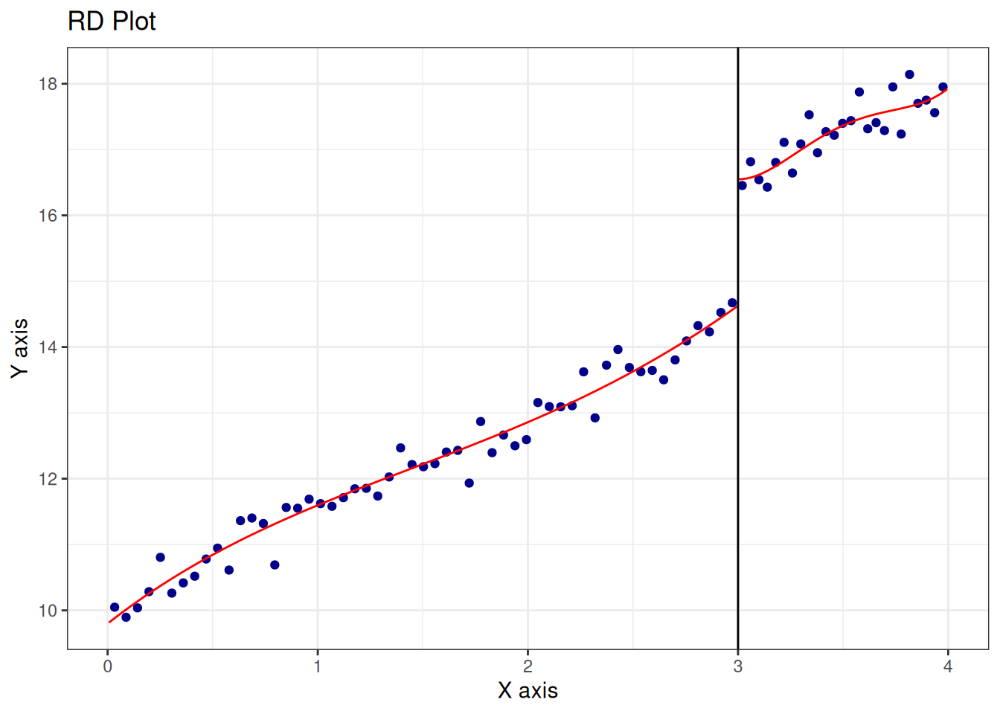

14 IV & Regression Discontinuity
With an unobserved confounder, unconfoundedness fails. Even a randomized experiment can face this problem through noncompliance: subjects are randomly assigned but some do not comply, so the actually-treated group is self-selected and that selection may be correlated with the outcome.
14.1 Instrumental Variables
14.1.1 Uncontrolled Confounder
The graph below is the problem: \(c\) is an unobserved common cause of the treatment \(w\) and the outcome \(y\). There is no adjustment set, because \(c\) is not measured.
14.1.2 Why Does IV Work?
Adding \(z\) gives a variable that moves \(w\) and reaches \(y\) only through \(w\). The arrow \(z \to w\) is the relevance condition, and the absence of any arrow from \(z\) to \(y\) or to \(c\) is the exclusion restriction and the exogeneity condition. The missing arrows carry the assumptions.

14.1.3 IV Under Potential Outcomes
- W has two potential outcomes W(1) and W(0), as a function of Z.
- Y has two potential outcomes Y(1) and Y(0), as a function of W.
Intention to Treat (ITT) is the average treatment effect of the treatment assignment Z. It is the difference between the average potential outcome under treatment and the average potential outcome under control. It is the average treatment effect of the treatment assignment Z, regardless of whether the subject complies with the assignment.
There are four possible groups of subjects in the case of binary treatment and binary instrument. The groups are defined by the potential treatment status \((W(0), W(1))\) — how the subject would take treatment under each value of the instrument — not by the observed \((Z, W)\):
- \(W(0)=0, W(1)=0\): never-taker
- \(W(0)=0, W(1)=1\): complier
- \(W(0)=1, W(1)=0\): defier
- \(W(0)=1, W(1)=1\): always-taker
| W(1)=0 | W(1)=1 | |
|---|---|---|
| W(0)=0 | N | C |
| W(0)=1 | D | A |
These four groups (strata) have different causal mechanisms. The compliers and defiers are the groups whose treatment status responds to the assignment \(Z\) — compliers in the same direction as the assignment, defiers in the opposite direction. The always-takers and never-takers take the same treatment regardless of \(Z\).
Unfortunately we cannot identify the compliance group by looking at the data.
| Z | W | G |
|---|---|---|
| 0 | 0 | C, N |
| 0 | 1 | A, D |
| 1 | 0 | N, D |
| 1 | 1 | C, A |
14.1.4 Assumptions
- Exclusion restriction: \(Y(w, 1) = Y(w,0)\)
- Exogeneity of instrument: \(Z \perp [W(0),W(1), Y(0), Y(1)]\)
- Monotonicity (no defiers): \(W(0) \leq W(1)\)
14.1.5 LATE Identification
Since we excluded defiers, and the other two groups (always-takers and never-takers) are not affected by the treatment assignment Z. The only effect we can identify is the treatment effect on the compliers. This is called the Local Average Treatment Effect (LATE).
Below we write potential outcomes indexed by the instrument, \(Y(Z=z)\), rather than by treatment status, \(Y(d)\). The exclusion restriction is exactly what licenses this: since \(Y(w,1)=Y(w,0)\), \(Y\) depends on \(Z\) only through \(W\), so \(Y(Z=z) = Y(W(z), z) = Y(W(z))\) in the usual treatment-indexed notation. For a complier (\(W(1)=1, W(0)=0\)), this means \(Y(Z=1) = Y(1)\) and \(Y(Z=0) = Y(0)\), so \(E[Y(Z=1)-Y(Z=0) \mid G=C]\) below is exactly \(E[Y(1)-Y(0) \mid G=C]\), the LATE in treatment-indexed notation.
\[ \small \begin{aligned} & E[Y(Z=1) - Y(Z=0) | G = C] \\ &= \frac{E[Y(Z=1) - Y(Z=0)]}{P(W(1)=1, W(0)=0)} \\ &= \frac{E[Y|Z=1] - E[Y|Z=0]}{1-P(W=0|Z=1)-P(W=1|Z=0)} \text{ (monotonicity rules out D; the A and N shares subtract) } \\ &= \frac{E[Y|Z=1] - E[Y|Z=0]}{P(W=1|Z=1)-P(W=1|Z=0)} \\ &= \frac{E[Y|Z=1] - E[Y|Z=0]}{E[W|Z=1]-E[W|Z=0]} \end{aligned} \tag{14.1}\]
14.1.6 Parametric Models
With a binary instrument this is exactly the ratio of two OLS coefficients — no linearity assumption is needed, since a regression on a binary regressor just computes the two group means. This is sometimes called the Wald estimator.
\[ \begin{aligned} \tau_{LATE} &= \frac{E[Y|Z=1] - E[Y|Z=0]}{E[W|Z=1]-E[W|Z=0]} \\ &= \frac{Cov(Y,Z)}{Cov(W,Z)} \end{aligned} \tag{14.2}\]
Why do covariates help? It is important to separate two assumptions here. Conditioning on covariates \(X\) can make the as-if-random (conditional independence) assumption more credible: the instrument may be unconfounded only within levels of \(X\). But the exclusion restriction – that the instrument has no direct effect on the outcome – is a substantive structural assumption that covariates do not generally repair. Adding \(X\) removes a direct \(Z \to Y\) path only if that path runs entirely through \(X\), or if exclusion is conditional by design. So covariates help with conditional independence, not with exclusion per se.
14.1.7 Example
We simulate \(n = 10{,}000\) observations. Three variables \((w, m, z)\) are drawn jointly normal with mean zero and unit variances, so their covariances are also their correlations: \(\text{corr}(w,m) = 0.36\), \(\text{corr}(w,z) = 0.64\), and \(\text{corr}(m,z) = 0\). A fourth variable \(u \sim N(0,1)\) is independent of everything. The outcome is \(y = w + m + u\).
So \(m\) is the omitted confounder, correlated with the treatment \(w\) but not with the instrument \(z\), and the true coefficient on \(w\) is 1. Because all variances are 1, we can predict the omitted-variable bias exactly: regressing \(y\) on \(w\) alone gives \(1 + \text{Cov}(m,w) = 1.36\).
We fit three models: OLS of \(y\) on \(w\), OLS of \(y\) on \(w\) and \(m\), and 2SLS using \(z\) as the instrument for \(w\).
Code
## DGP: data$y <- data$w + data$m + data$u
library(sem)
set.seed(66)
nobs=10000
nDim = 3
sdww = 1
sdzz=1
sdmm=1
## here we have three variables w, m, z.
## m is the omitted variable; w and m are correlated; z is the instrument, which is correlated with w, but not m. u is independent of everything else.
## with unit variances, the covariances below ARE the correlations
crwm=.36
crmz=0
crwz=.64
covarMat = matrix( c(sdww^2, crwm, crwz, crwm, sdmm^2, crmz, crwz, crmz, sdzz^2 ) , nrow=nDim , ncol=nDim )
data = data.frame(MASS::mvrnorm(n=nobs, mu=rep(0,nDim), Sigma=covarMat ))
names(data) <- c('w','m','z')
data$u <- rnorm(nobs,0,1)
# dgp
data$y <- data$w + data$m + data$u
lm <- lm(y~w, data=data)
lm.full <- lm(y~ w + m, data=data)
tsls.model <- sem::tsls(y ~ w , ~ z , data=data)Code
# lm is biased
summary(lm)$coefficients Estimate Std. Error t value Pr(>|t|)
(Intercept) -0.003580657 0.01372253 -0.2609326 0.7941498
w 1.358930425 0.01396918 97.2805995 0.0000000Code
# lm.full is good
summary(lm.full)$coefficients Estimate Std. Error t value Pr(>|t|)
(Intercept) 0.001833551 0.009973474 0.1838428 0.8541405
w 0.992438925 0.010868032 91.3172630 0.0000000
m 1.013403057 0.010723435 94.5035837 0.0000000Code
# tsls is good.
summary(tsls.model)$coefficients Estimate Std. Error t value Pr(>|t|)
(Intercept) 0.006008287 0.01424525 0.4217749 0.6731984
w 0.972416527 0.02312558 42.0493890 0.0000000OLS on \(w\) alone gives 1.3589, matching the predicted 1.36 to three decimals. OLS controlling for \(m\) gives 0.9924 on \(w\) and 1.0134 on \(m\), both close to the true 1, which is what we would do if the confounder were observed. 2SLS gives 0.9724 with a standard error of 0.0231, recovering the truth without ever using \(m\).
Note the cost of instrumenting: the 2SLS standard error is 0.0231 against 0.0109 for the OLS that controls for \(m\), twice as large. The instrument uses only the part of \(w\) that \(z\) explains, and here that is 41% of its variance.
14.1.8 Control Function Approach
Two-stage least squares can be implemented equivalently via the control function (CF) approach. Understanding why makes the extension to nonlinear models (next chapter) transparent.
Algebraic motivation. Because w is endogenous, decompose the structural error:
\[\varepsilon = \rho v + \eta, \qquad v \equiv w - E[w \mid z], \qquad E(z\eta) = 0,\; E(zv) = 0. \tag{14.3}\]
If we knew \(v\), controlling for it directly would eliminate the confounding channel. We don’t know \(v\), but the first-stage residual \(\hat v = w - \hat w\) is a consistent estimate. Substituting into the structural equation:
\[y = \alpha + \beta w + \rho\,\hat v + \text{error}. \tag{14.4}\]
OLS on this augmented second stage gives a consistent \(\hat\beta\) — identical to 2SLS by the Frisch–Waugh–Lovell (FWL) theorem. The coefficient \(\hat\rho\) on \(\hat v\) doubles as a Durbin–Wu–Hausman (DWH) endogeneity test: under \(H_0\) (w is exogenous), \(\rho = 0\).
Code
# Manual 2SLS, explicitly
stage1 <- lm(w ~ z, data = data)
data$w_hat <- fitted(stage1)
tsls_manual <- lm(y ~ w_hat, data = data)
# Control function: first-stage residual v_hat in the augmented regression
data$v_hat <- residuals(stage1)
lm_cf <- lm(y ~ w + v_hat, data = data)
# Compare β̂_w from manual 2SLS and CF — should be identical by FWL
coef_tsls <- coef(tsls_manual)["w_hat"]
coef_cf <- coef(lm_cf)["w"]
sprintf("Manual 2SLS beta_w = %.8f", coef_tsls)[1] "Manual 2SLS beta_w = 0.97241653"Code
sprintf("Control funct beta_w = %.8f", coef_cf)[1] "Control funct beta_w = 0.97241653"Code
[1] "DWH test on v_hat: coef = 0.6366 se = 0.0279 t = 22.827 p = 1.797e-112"Both routes give \(\hat\beta_w = 0.97241653\), agreeing to all eight printed digits, which confirms FWL. The coefficient on \(\hat v\) is 0.6366 with a standard error of 0.0279, so \(t = 22.8\) and \(H_0\!:\rho = 0\) is rejected: w is endogenous. That coefficient also has a value we can derive. With \(\varepsilon = m + u\) and \(v = w - 0.64z\), we have \(\text{Cov}(\varepsilon, v) = \text{Cov}(m,w) = 0.36\) and \(\text{Var}(v) = 1 - 0.64^2 = 0.5904\), so \(\rho = 0.36/0.5904 = 0.610\). The estimate is within one standard error of it. One caveat: the OLS standard errors from the augmented regression are not valid for \(\hat\beta\) (\(\hat v\) is a generated regressor; the DWH test is fine because under \(H_0\) the first-stage estimation error does not matter). Use 2SLS standard errors, or bootstrap the two stages jointly as we do in the Poisson IV chapter.
Why FWL fails in nonlinear models. FWL is a property of linear projections; once we replace OLS with Poisson or Probit, the estimator is no longer a linear projection and the partialling-out logic does not apply. In a nonlinear second stage, \(\hat v\) must enter inside the link function (e.g. \(\exp(\mathbf{x}\boldsymbol\beta + \rho \hat v)\)), which requires a structural assumption beyond instrument exogeneity. This is the subject of the next chapter.
14.2 When 2SLS with Covariates Is Actually LATE
The LATE identification above is clean because we have no covariates. The Wald estimator gives us LATE, full stop. But in practice we usually add covariates to defend conditional exogeneity:
\[ Y = \beta W + \gamma^\top X + U, \qquad W = \pi Z + \delta^\top X + V. \tag{14.5}\]
Does 2SLS on this still give us a LATE? Angrist and Pischke (2009) say it gives a weighted average of covariate-specific LATEs. Blandhol et al. (2025) show that this is generally not true.
14.2.1 Why the Linear Specification Hides an Assumption
By Frisch-Waugh-Lovell, the IV estimand is
\[ \beta_{iv} = \frac{E[Y \tilde Z]}{E[W \tilde Z]}, \qquad \tilde Z = Z - L[Z \mid X], \tag{14.6}\]
where \(L[Z \mid X]\) is the linear projection of \(Z\) on \(X\). So \(\tilde Z\) is the part of \(Z\) that a linear regression on \(X\) cannot explain.
What if the true \(E[Z \mid X]\) is not linear in \(X\)? Then \(L[Z \mid X] \neq E[Z \mid X]\), and the residual instrument \(\tilde Z\) still picks up some of the conditional mean. The IV estimand then mixes treatment effects across compliance groups. Blandhol et al. (2025) prove that \(\beta_{iv}\) is a non-negatively weighted average of conditional LATEs only if the rich covariates condition holds:
\[ L[Z \mid X] = E[Z \mid X]. \tag{14.7}\]
This is a parametric assumption about \(E[Z \mid X]\). It is implicit in the linear-in-\(X\) specification, and it is rarely defended. When it fails, \(\beta_{iv}\) picks up treatment effects for always-takers as well as compliers, and some always-taker terms enter with negative weight.
“2SLS with covariates estimates LATE” is true only if \(X\) enters saturated (one dummy per cell), or the true \(E[Z \mid X]\) happens to be linear in \(X\).
14.2.2 A Simulation
We build a DGP where \(E[Z \mid X]\) is strongly nonlinear in \(X\), so the linear-in-\(X\) specification has to fail, and then compare four estimators against the true LATE.
We draw \(n = 8000\) observations with a single covariate \(X \sim U(-1,1)\). The instrument is \(Z \sim \text{Bernoulli}(p_Z(X))\) with \(p_Z(X) = \Lambda(0.3 + X + 2\sin(2.5\pi X))\) — the sine term is what a linear projection cannot reproduce. Potential treatments come from one uniform draw \(U\) compared against two thresholds, \(T_0 = \mathbb{1}\{U < \Lambda(-1.6+X)\}\) and \(T_1 = \mathbb{1}\{U < \min(\Lambda(-0.4+X)+0.2,\, 0.95)\}\), so \(T_1 \ge T_0\) and monotonicity holds by construction. Observed treatment is \(W = ZT_1 + (1-Z)T_0\). The effect is heterogeneous in \(X\), \(\tau(X) = 0.5+1.5X\), and the potential outcomes are \(Y(0) = 1 + 2X + 0.8X^2 + \varepsilon\) with \(\varepsilon \sim N(0,1)\) and \(Y(1) = Y(0) + \tau(X)\).
Two features matter. \(X\) enters both the instrument propensity and the treatment thresholds, so \(Z\) is exogenous only conditional on \(X\). And \(\tau\) depends on \(X\), so which units the instrument moves determines the answer.
Code
library(ivreg) # ivreg()
library(DoubleML) # PLIV / debiased ML
library(mlr3)
library(mlr3learners)
library(lmtest) # resettest()
set.seed(20260522)
n <- 8000
# Single covariate on [-1, 1]
X <- runif(n, -1, 1)
# True conditional mean of Z is wildly nonlinear in X.
# A linear projection L[Z|X] cannot reproduce this.
pZ_true <- plogis(0.3 + 1.0 * X + 2.0 * sin(2.5 * pi * X))
Z <- rbinom(n, 1, pZ_true)
# Potential treatment states with monotonicity (T1 >= T0).
# X enters the propensity, so X confounds W <-> Y.
U <- runif(n)
p0 <- plogis(-1.6 + 1.0 * X) # P(always-taker | X)
p1 <- pmin(plogis(-0.4 + 1.0 * X) + 0.2, 0.95) # P(AT or CP | X)
T0 <- as.integer(U < p0)
T1 <- as.integer(U < p1)
W <- ifelse(Z == 1, T1, T0) # observed treatment
G <- ifelse(T1 == 1 & T0 == 1, "AT",
ifelse(T1 == 0 & T0 == 0, "NT", "CP"))
# Heterogeneous treatment effect — varies with X
tau <- 0.5 + 1.5 * X
Y0 <- 1.0 + 2.0 * X + 0.8 * X^2 + rnorm(n, 0, 1)
Y1 <- Y0 + tau
Y <- ifelse(W == 1, Y1, Y0)
# Truth (only knowable in simulation)
true_LATE <- mean(tau[G == "CP"])
prop.table(table(G))G
AT CP NT
0.184000 0.429875 0.386125 True unconditional LATE = 0.615The compliance shares are 18.4% always-takers, 43.0% compliers and 38.6% never-takers, and the true LATE, the mean of \(\tau\) over compliers, is 0.615.
We now compare four estimators against it: the unconditional Wald ratio, 2SLS with \(X\) entered linearly, 2SLS with a degree-7 polynomial in \(X\), and DDML PLIV with random-forest nuisance learners.
Code
# (a) Wald — biased: Z is not unconditionally exogenous because X confounds.
wald <- (mean(Y[Z == 1]) - mean(Y[Z == 0])) /
(mean(W[Z == 1]) - mean(W[Z == 0]))
# (b) TSLS with X entered linearly — the textbook spec.
tsls_lin <- ivreg(Y ~ W + X | Z + X)
b_lin <- coef(tsls_lin)["W"]
# (c) TSLS with a rich basis (polynomial up to degree 7) — closer to saturation.
tsls_poly <- ivreg(Y ~ W + poly(X, 7) | Z + poly(X, 7))
b_poly <- coef(tsls_poly)["W"]
# (d) DDML PLIV via the DoubleML package with random-forest nuisance learners.
lgr::get_logger("mlr3")$set_threshold("warn")
dml_df <- data.frame(Y = Y, W = W, Z = Z, X = X)
dml_data <- DoubleMLData$new(dml_df, y_col = "Y", d_cols = "W",
x_cols = "X", z_cols = "Z")
rf <- lrn("regr.ranger", num.trees = 500, max.depth = 5, min.node.size = 2)
set.seed(20260522)
dml_pliv <- DoubleMLPLIV$new(dml_data,
ml_l = rf$clone(),
ml_m = rf$clone(),
ml_r = rf$clone(),
n_folds = 5)
dml_pliv$fit()
b_pliv <- as.numeric(dml_pliv$coef)
se_lin <- summary(tsls_lin)$coefficients["W", "Std. Error"]
se_poly <- summary(tsls_poly)$coefficients["W", "Std. Error"]
se_pliv <- as.numeric(dml_pliv$se)
results <- data.frame(
Estimator = c("True LATE",
"Wald (no covariates)",
"TSLS, X linear",
"TSLS, poly(X, 7)",
"DDML PLIV (DoubleML + ranger)"),
Estimate = c(true_LATE, wald, b_lin, b_poly, b_pliv),
SE = c(NA, NA, se_lin, se_poly, se_pliv)
)
print(results, row.names = FALSE, digits = 3) Estimator Estimate SE
True LATE 0.615 NA
Wald (no covariates) 1.839 NA
TSLS, X linear 0.486 0.0609
TSLS, poly(X, 7) 0.497 0.0695
DDML PLIV (DoubleML + ranger) 0.510 0.0719The linear-in-\(X\) 2SLS does not recover the true LATE — and neither do the more flexible versions. Two things are going on, and the standard errors in the table help separate them. First, the estimands differ: for this DGP the linear-projection 2SLS converges to 0.55, and the polynomial 2SLS and DDML PLIV converge to approximately \(\beta_{rich} = 0.58\) (computable by integrating the weight formula below), all below the population LATE of 0.615 — a real but modest gap that persists at any sample size. Second, sampling noise: with SEs near 0.06, this particular draw happens to land about 1.5 SEs below its own estimand, which is why the estimates cluster near 0.49–0.51 rather than 0.55–0.58. The Wald estimator is far off for a different reason entirely, at 1.839 against a truth of 0.615: \(Z\) is not unconditionally exogenous, and Wald has no way to use \(X\).
What are the polynomial 2SLS and DDML PLIV estimating, if not LATE? PLIV targets \(\beta_{rich}\), a weighted average of conditional LATEs with weights proportional to \(\text{Var}(Z \mid X) \cdot P(\text{complier} \mid X)\); the polynomial 2SLS targets nearly the same quantity (a degree-7 polynomial cannot fully reproduce this \(E[Z \mid X]\), so its estimand is a misspecified-projection variant sitting just below \(\beta_{rich}\)). These are non-negatively weighted, so weakly causal. But they are not the unconditional LATE we usually want.
14.2.3 Diagnostic: RESET on Z ~ X
Rich covariates says \(E[Z \mid X]\) is linear in \(X\). That is exactly the null of Ramsey’s RESET test (Ramsey 1969). We can apply it to a regression of \(Z\) on \(X\) and see whether higher-order terms of \(X\) are jointly significant.
RESET test
data: lm(Z ~ X)
RESET = 117.02, df1 = 2, df2 = 7996, p-value < 2.2e-16It rejects strongly here, \(\text{RESET} = 117.0\) on 2 and 7,996 degrees of freedom with \(p < 2.2 \times 10^{-16}\), which is the right answer given that we put a sine wave in \(E[Z \mid X]\). The same test on real data is cheap, and it tells us whether the LATE interpretation is defensible before we report a 2SLS coefficient.
14.2.4 What to Do Instead
Blandhol et al. (2025) give four steps for empirical work.
Reconsider the covariates. If \(Z\) is unconditionally exogenous, drop them. A kitchen-sink set of controls makes rich covariates less likely.
Run RESET on
Z ~ X. If it does not reject, the linear-IV-as-LATE interpretation is defensible.If RESET rejects, report DDML PLIV alongside 2SLS. That is what the
DoubleMLchunk above does. DDML PLIV targets \(\beta_{rich}\), a non-negatively weighted average of conditional LATEs.-
For a binary instrument, also estimate the unconditional LATE. With instrument propensity score weighting (Słoczyński 2024),
\[ \hat\beta_{late} = \frac{\sum_i Y_i [Z_i/\hat p(X_i) - (1-Z_i)/(1-\hat p(X_i))]}{\sum_i W_i [Z_i/\hat p(X_i) - (1-Z_i)/(1-\hat p(X_i))]}, \tag{14.8}\]
where \(\hat p(X) = P(Z = 1 \mid X)\) is estimated nonparametrically. Stata has
kappalate(Słoczyński, Uysal and Wooldridge), which implements this and related weighting estimators of the LATE. In R it is straightforward to build once \(\hat p(X)\) is in hand.
14.2.5 A Note on the FRDD Example
The fuzzy-RDD example at the end of this chapter is 2SLS with race, state of birth, and quarter-of-birth fixed effects entered as covariates. That section traces the gap between the 2SLS and the local rdrobust estimates to the first stage, which is close to zero near the cutoff. Rich covariates is a separate question about the 2SLS estimate itself, and the RESET test on the above-cutoff instrument against those covariates is the right first thing to run.
14.2.6 Bottom Line
“2SLS with covariates estimates LATE” needs the rich covariates condition. That condition is a parametric assumption on \(E[Z \mid X]\) that researchers rarely defend, and a simple RESET test often rejects it. The honest alternatives are DDML PLIV for \(\beta_{rich}\) and IPSW (or DDML) for the unconditional LATE. Even when rich covariates holds, \(\beta_{rich}\) can be quite different from the unconditional LATE we usually care about.
14.3 Regression Discontinuity Design
RDD (regression discontinuity design) is a quasi-experimental design that is used to estimate causal effects of interventions when assignment to the intervention is determined by whether a subject’s value on an observed covariate exceeds a threshold. The idea is that the assignment is as good as random, so we can estimate the causal effect of the intervention by comparing the outcomes of subjects who are just above and just below the threshold.
14.3.2 Identification of SRDD
\[ \tau_{RD} = \lim_{x \to c^+} E[Y|X=x] - \lim_{x \to c^-} E[Y|X=x] \tag{14.10}\]
In words, the treatment effect is the difference in the outcome from the right side and from the left side. This is the same as the difference in the outcome at the threshold, as if the treatment is assigned randomly.
14.3.3 Estimation of SRDD
Before the real data, a simulation where we know the answer. We draw \(n = 1000\) students with \(\text{GPA} \sim U(0,4)\) and outcome \(Y = 10 + 1.5\,\text{GPA} + 2 \cdot \mathbb{1}\{\text{GPA} > 3\} + \varepsilon\) with \(\varepsilon \sim N(0,1)\). The cutoff is 3 and the true jump is 2. The running variable also has a direct effect on the outcome, with slope 1.5, which is what the local regression on each side has to absorb.
Code

Code
Call: rdrobust
Sharp RD estimates using local polynomial regression.
Number of Obs. 1000
BW type mserd
Kernel Triangular
VCE method NN
Left Right
Number of Obs. 734 266
Eff. Number of Obs. 103 99
Order est. (p) 1 1
Order bias (q) 2 2
BW est. (h) 0.407 0.407
BW bias (b) 0.611 0.611
rho (h/b) 0.666 0.666
Unique Obs. 734 266
=====================================================================
Point Robust Inference
Estimate z P>|z| [ 95% C.I. ]
---------------------------------------------------------------------
RD Effect 1.827 5.333 0.000 [1.154 , 2.494]
=====================================================================The estimated jump is 1.827 with a robust 95% interval of \([1.154, 2.494]\), covering the true 2. Note how little data the estimate uses: the MSE-optimal bandwidth is 0.407, so of the 1,000 observations only 103 on the left and 99 on the right are effective. A local estimator pays for its weak assumptions with a small effective sample, which is why the interval is 1.3 wide for a jump of 2.
14.3.4 Nonparametric Estimation
Now the same estimator on the Senate data, with the cutoff at a margin of zero.
Code
Call: rdrobust
Sharp RD estimates using local polynomial regression.
Number of Obs. 1297
BW type mserd
Kernel Triangular
VCE method NN
Left Right
Number of Obs. 595 702
Eff. Number of Obs. 360 323
Order est. (p) 1 1
Order bias (q) 2 2
BW est. (h) 17.754 17.754
BW bias (b) 28.028 28.028
rho (h/b) 0.633 0.633
Unique Obs. 595 665
=====================================================================
Point Robust Inference
Estimate z P>|z| [ 95% C.I. ]
---------------------------------------------------------------------
RD Effect 7.414 4.311 0.000 [4.094 , 10.919]
=====================================================================The incumbency effect is 7.414 percentage points with a robust 95% interval of \([4.094, 10.919]\). Barely winning a Senate seat raises the party’s vote share in the next election for that seat by about 7 points. The bandwidth is 17.75 margin points, leaving 360 observations on the left and 323 on the right out of 1,297.
14.3.5 Fuzzy RDD
In fuzzy RDD, the treatment is assigned according to a threshold \(c\), but there exist non-compliance. This is similar to IV case.
\[ \tau_{FRD} = \frac{\lim_{x \to c^+} E[Y|X=x] - \lim_{x \to c^-} E[Y|X=x]}{\lim_{x \to c^+} E[W|X=x] - \lim_{x \to c^-} E[W|X=x]} \tag{14.11}\]
For example, if food stamp eligibility is given to all households below a certain income, but not all households receive the food stamps. In other words, income does not solely determine the assignment. Cutoff point increases the probability of treatment but doesn’t completely determine treatment.
FRDD is IV.
14.3.6 FRDD Example
Fetter (2013)’s main question of interest is how much of the increase in the home ownership rate in the midcentury US was due to mortgage subsidies given out by the government.
We’re using the running variable quarter of birth (qob), which has been centered on the quarter of birth you’d need to be to be eligible for a mortgage subsidy for fighting in the Korean War (qob_minus_kw). This determines whether you were a veteran of either the Korean War or World War II (vet_wwko).
Code
vet <- causaldata::mortgages
# Create an "above-cutoff" variable as the instrument. Keep it numeric: a
# logical would make qob_minus_kw:above expand into two columns.
vet <- vet %>% mutate(above = as.numeric(qob_minus_kw > 0))
# Impose a bandwidth of 12 quarters on either side
vet <- vet %>% filter(abs(qob_minus_kw) < 12)
# Note: the running variable qob_minus_kw is exogenous, so it goes in the
# control block (not the endogenous block). Listing it in both the
# endogenous and instrument sets makes newer fixest error ("endogenous
# variable fully explained"). The endogenous regressors are veteran status
# and its interaction with the running variable, instrumented by being above
# the cutoff and that interaction.
m <- feols(home_ownership ~
nonwhite + qob_minus_kw | # exogenous controls incl. the running variable
bpl + qob | # fixed effect controls
vet_wwko + qob_minus_kw:vet_wwko ~ # endogenous: treatment and its RDD slope interaction
above + qob_minus_kw:above, # instruments: above-cutoff and its interaction
se = 'hetero', # heteroskedasticity-robust SEs
data = vet)
summary(m)TSLS estimation: Second stage
|- D.V. : home_ownership
|- Endo. : vet_wwko, vet_wwko:qob_minus_kw
|- Instr. : above, above:qob_minus_kw
Dep. Var.: home_ownership
Observations: 56,901
Fixed-effects: bpl: 52, qob: 4
Standard-errors: Heteroskedasticity-robust
Estimate Std. Error t value Pr(>|t|)
fit_vet_wwko 0.170172 0.045933 3.70479 2.1177e-04 ***
fit_vet_wwko:qob_minus_kw -0.002853 0.002637 -1.08159 2.7944e-01
nonwhite -0.190434 0.006892 -27.63141 < 2.2e-16 ***
qob_minus_kw -0.007151 0.001773 -4.03209 5.5355e-05 ***
---
Signif. codes: 0 '***' 0.001 '**' 0.01 '*' 0.05 '.' 0.1 ' ' 1
RMSE: 0.441909 Adj. R2: 0.066481
Within R2: 0.051235
F-test (1st stage), vet_wwko : stat = 315.7039, p < 2.2e-16 , on 2 and 56,842 DoF.
F-test (1st stage), vet_wwko:qob_minus_kw: stat = 1,861.1810, p < 2.2e-16 , on 2 and 56,842 DoF.
Wu-Hausman: stat = 6.7536, p = 0.001168, on 2 and 56,840 DoF.The 2SLS estimate is 0.1702 with a heteroskedasticity-robust standard error of 0.0459: veteran status raises home ownership by 17 percentage points. The sample is 56,901 people within 12 quarters of the cutoff, with birthplace and quarter-of-birth fixed effects. The first-stage \(F\) statistics are 316 and 1,861, so the instruments are strong, and the Wu-Hausman test rejects exogeneity of veteran status at \(p = 0.001\). The interaction of veteran status with the running variable is not significant, so there is little evidence that the slope differs across the cutoff.
Now the same design estimated locally with rdrobust. We pass race and state of birth as covariates, but not quarter of birth. Quarter of birth is a function of the running variable, and the local window holds only three quarters on each side of the cutoff. There the quarter-of-birth dummies duplicate the local linear fits, and the jump is not identified with them in. rdrobust still returns a number, but the number is arbitrary: with the dummies included it gives 0.096 or 0.838, depending only on whether the covariate matrix carries an intercept column.
Code
# race and state of birth; quarter of birth is left out (see text)
conmatrix <- model.matrix(~ nonwhite + bpl, data = vet)[, -1]
m <- rdrobust(vet$home_ownership,
vet$qob_minus_kw,
fuzzy = vet$vet_wwko,
c = 0,
covs = conmatrix)
summary(m)Call: rdrobust
Covariate-adjusted Fuzzy RD estimates using local polynomial regression.
Number of Obs. 56901
BW type mserd
Kernel Triangular
VCE method NN
Left Right
Number of Obs. 28776 28125
Eff. Number of Obs. 6911 6756
Order est. (p) 1 1
Order bias (q) 2 2
BW est. (h) 2.612 2.612
BW bias (b) 5.371 5.371
rho (h/b) 0.486 0.486
Unique Obs. 12 12
First-stage estimates.
=====================================================================
Point Robust Inference
Estimate z P>|z| [ 95% C.I. ]
=====================================================================
Rd Effect -0.010 0.344 0.731 [-0.038 , 0.055]
=====================================================================
Treatment effect estimates.
=====================================================================
Point Robust Inference
Estimate z P>|z| [ 95% C.I. ]
---------------------------------------------------------------------
RD Effect 2.368 1.130 0.258 [-4.780 , 17.803]
=====================================================================Code
m$Estimate tau.us tau.bc se.us se.rb
[1,] 2.368439 6.511521 4.968075 5.761289rdrobust returns a conventional estimate of 2.37 with a standard error of 4.97, and a bias-corrected estimate of 6.51 with a robust standard error of 5.76. The robust 95% interval runs from \(-4.78\) to 17.80. For an effect on a probability, that says nothing.
The reason is the first stage. A fuzzy RD divides the jump in the outcome by the jump in treatment at the cutoff. Here we estimate the second jump directly, with the same covariates and bandwidth.
Code
# first stage: the jump in veteran status at the cutoff
fs <- rdrobust(vet$vet_wwko, vet$qob_minus_kw, c = 0,
covs = conmatrix, h = m$bws[1, 1])
fs$Estimate tau.us tau.bc se.us se.rb
[1,] -0.01023544 -0.002475043 0.02053608 0.03316261Code
# A tibble: 8 × 2
qob_minus_kw vet_share
<dbl> <dbl>
1 -3.5 0.561
2 -2.5 0.558
3 -1.5 0.525
4 -0.5 0.480
5 0.5 0.417
6 1.5 0.352
7 2.5 0.294
8 3.5 0.276Within 2.6 quarters of the cutoff, veteran status does not jump: the estimate is \(-0.010\) with a standard error of 0.021. The veteran share falls from 0.56 two and a half quarters before the cutoff to 0.29 two and a half quarters after, but it falls steadily across those quarters, with no break at zero. The fuzzy estimate divides a noisy jump in home ownership by a jump in treatment that is indistinguishable from zero.
2SLS finds a strong first stage because it fits one line on each side over 12 quarters and reads the jump off where the two lines meet. The steep decline near the cutoff then registers as a large jump. Its 0.17 rests on that linear specification. The local estimator drops the assumption, and the data near the cutoff then have nothing to say. The two estimates do not contradict each other. The local one is uninformative here.
14.4 Summary
An instrument recovers an effect when the confounder is unobserved. It must move the treatment (relevance), reach the outcome only through the treatment (exclusion) and be as good as random. With heterogeneous effects and no defiers, the Wald ratio identifies the LATE, the effect on compliers. Adding covariates linearly keeps that interpretation only under the rich-covariates condition, that the instrument’s conditional mean is linear in the covariates. A RESET test on the instrument checks it. Regression discontinuity replaces the instrument with a cutoff in a running variable and assumes continuity at the cutoff. Fuzzy RDD is IV at the cutoff.
In the simulation, OLS gives 1.3589, and 2SLS gives 0.9724 against a true 1. With a nonlinear instrument propensity, the true LATE is 0.615 and the linear 2SLS converges to 0.55. The Senate incumbency effect is 7.4 percentage points. In the Korean War example, 2SLS gives 0.1702 (0.0459). The local rdrobust estimate, 2.37 (4.97), is uninformative, because veteran status does not jump at the cutoff within the local window. The 2SLS first stage comes from linear fits over 12 quarters.